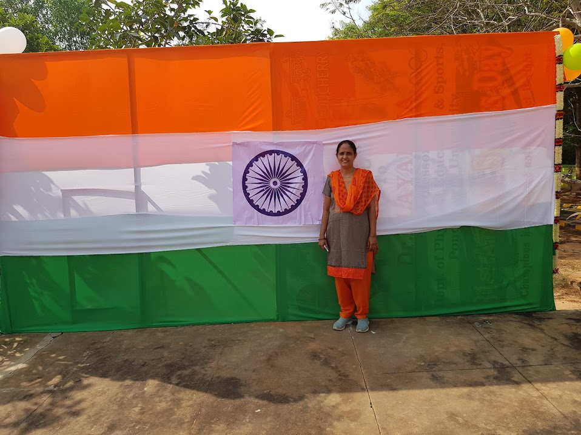
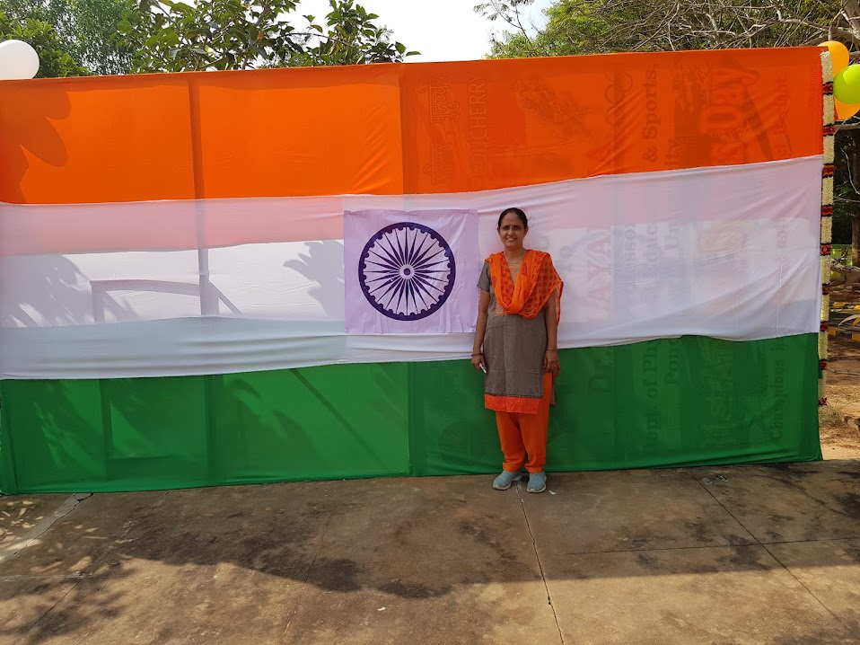
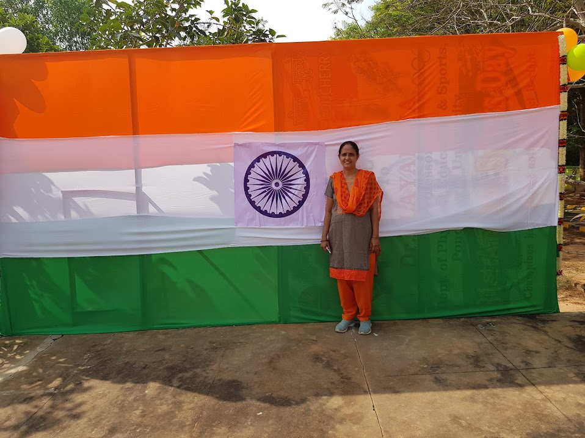

PORTFOLIO
 

Being an IT professional, I enjoy learning about the breakthrough in technology. I attended a professional workshop about ‘new technologies’ last year, where I learned about a new tool in the market (mention the tool), and I used it in my last project (briefly mention the project). I have excellent interpersonal skills, which have helped me carry out the responsibility of leading the meetings with clients in my previous projects (briefly mention the project)."
Hello sir/madam, It's my pleasure to speak with you. I am (Your Name). Basically, I belong to (City Name). I have been living in (City Name) for (No. of years/months) now. I stay here with my family. Besides my parents, there is a younger brother in my family. Currently, I am exploring job opportunities in the (Domain Name) as I have recently finished (Degree Name) from (University Name). I am very interested in the (Domain of your interest). That was the reason I chose to pursue higher studies in (Program Name). Post that, my internship experience and other practical projects in the college further boosted my interest in (Field name) as a full-time career option. Not only am I passionate about the field I graduated in (Mention field), I am also inclined towards creative activities such as dancing, painting, acting, etc. I have always been an active student in school and college. I have participated in many cultural events during my school and college days and have won many awards. In my free time, I enjoy going out with friends and trying new cuisines. I also enjoy watching movies, listening to music, reading, working out, and going on road trips. I am looking forward to knowing more about this opportunity and I will be happy to answer more questions.

"I have been working as a Sales Professional for 5 years now. I joined as a Sales executive and worked my way up to the position of Sales Manager within 3 years. I have a thorough understanding of Sales planning and business development. I have been mostly involved in establishing effective client relationships. I have also developed a superior understanding of customer service and customer relationship with the span of time. To give you an example, I would like to talk about a relatively difficult and unique project that helped me increase the profitability and annual sales volume of the company (briefly mention the project)."
"I have been working as a Sales Professional for 5 years now. I joined as a Sales executive and worked my way up to the position of Sales Manager within 3 years. I have a thorough understanding of Sales planning and business development. I have been mostly involved in establishing effective client relationships. I have also developed a superior understanding of customer service and customer relationship with the span of time. To give you an example, I would like to talk about a relatively difficult and unique project that helped me increase the profitability and annual sales volume of the company (briefly mention the project)."
"I have been working as a Sales Professional for 5 years now. I joined as a Sales executive and worked my way up to the position of Sales Manager within 3 years. I have a thorough understanding of Sales planning and business development. I have been mostly involved in establishing effective client relationships. I have also developed a superior understanding of customer service and customer relationship with the span of time. To give you an example, I would like to talk about a relatively difficult and unique project that helped me increase the profitability and annual sales volume of the company (briefly mention the project)."